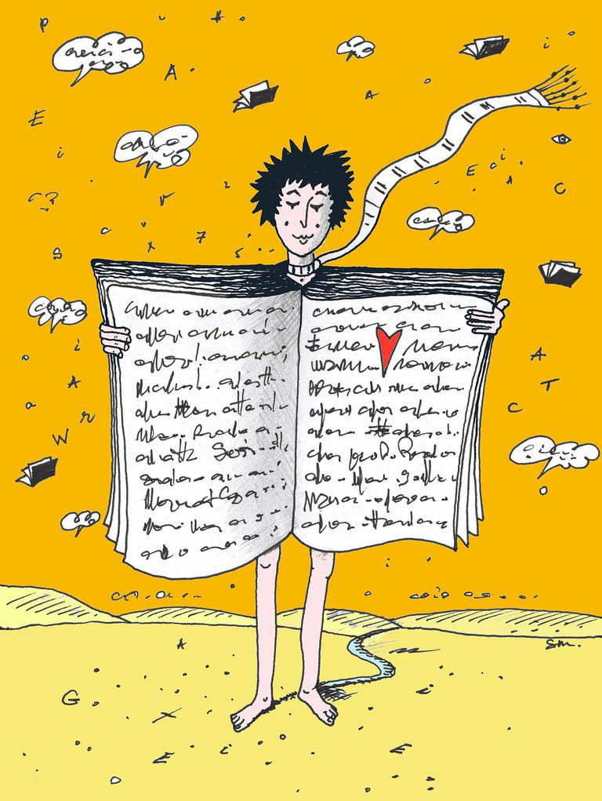

Bio
October 3,2021 by Yackeim Folkes
Yackeim Romario Folkes is a 21-year-old science student who enjoys stealing candy from babies, social media and football. He is generous and extroverted, but can also be very taciturn and a bit selfish. He is Jamaican who defines himself as straight who is currently at The University of the West Indies and studying actuarial science.
Physically, Yackeim is in pretty good shape. He is average-height with dark skin, black hair and brown eyes. He grew up in a working class neighbourhood. He was raised by his mother, his father having left when he was young.